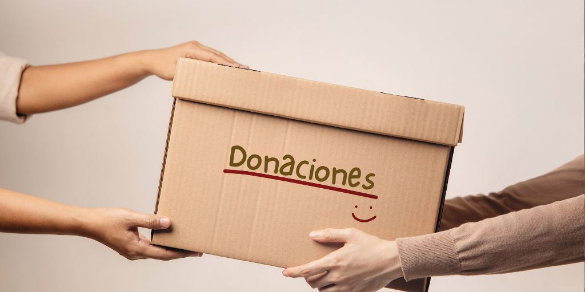

Por Una Vida Más
Por Una Vida Más
Nuestras ideas
En esta sección te contamos sobre los programas que tenemos para ayudar a las personas en situación de calle, cada programa tiene su propia descripción, a quien va dirigido y como podes participar.

Distribucion de alimentos
Dirigido a: Personas en situación de calle y familias que no puedan acceder a una alimentacion diaria.
Como participar:En este apartado nos podes colaborar con donaciones o alimentos a traves de este link, donar aqui.

Distribucion de salud medica basica
Descripción:Brindamos atención médica básica a personas en situación de calle, incluyendo controles generales, primeros auxilios y entrega de medicamentos esenciales cuando es posible
Dirigido a:Personas en situación de calle que no tienen acceso a servicios de salud.
Como participar:Pódes colaborar como voluntario en las jornadas medicas o donar insumos como medicamentos o insumos, donar aqui.
Ropero solidario
Descripción:Recolección y distribución de ropa, calzado y abrigo en buen estado para personas en situación de calle, especialmente en épocas de frío.
Dirigido a:Personas en situación de calle o familias con bajos recursos que no cuentan con vestimenta adecuada.
Como participar:Podés donar ropa en buen estado o colaborar como voluntario ayudando a clasificar y repartir las prendas. donar aqui